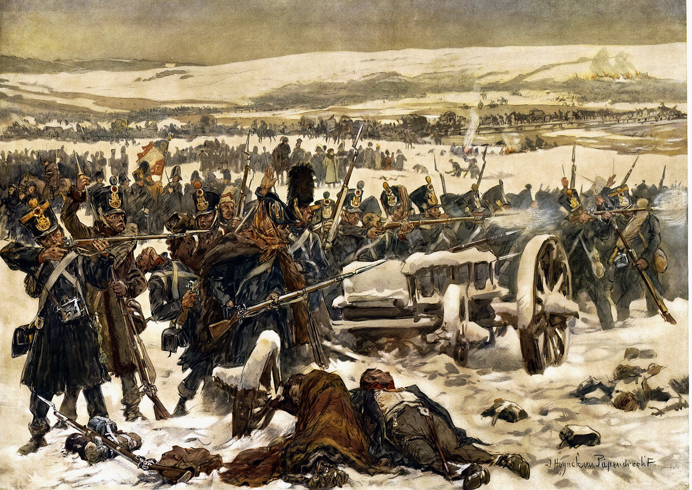

МИСТИКА
Золото Наполеона.
Искать или забыть?
Бегство Наполеона
Я скорее предпочту есть руками, чем оставлю русским хоть одну вилку с моей монограммой...
- так сказал Наполеон, когда ночевал в белорусском городке Толочин во время бегства в 1812 году. От полумиллионной наполеоновской армии осталось едва ли 20 тысяч человек. Но эта армия везла и несла на себе многочисленные трофеи, в том числе и сокровища московского Кремля. Зима в тот год была ранней, и французские солдаты, голодные и обмороженные, падали в придорожную грязь и снег под тяжестью собственных вещмешков. И тогда великий полководец принял решение: нужно избавиться от трофеев, бросить обозы. Но что делать с золотом? И вот в нескольких десятках верст от переправы через Березину, как раз в том месте, где старая Смоленская дорога переходит в Борисовский тракт, кареты и фургоны, буквально набитые драгоценностями, внезапно и таинственно исчезли.
Клад Наполеона - это:
- - золото (переплавленное из различных предметов) - 180 пудов (1 пуд - 16 килограммов);
- - серебро (в слитках) - 325 пудов;
- - изделия из драгоценных металлов, коллекции старинного оружия и предметов искусства, драгоценные камни и самоцветы, церковная утварь, иконы с дорогими окладами, драгоценная посуда и т. д. - более 800 пудов.
Кроме того, в обозе с трофеями ушли: из Архангельского собора - уникальное старинное серебряное, местами с позолотой венецианской работы паникадило, весом в 113 пудов, а с колокольни Ивана Великого, что в Московском Кремле был снят один из символов православной веры - крест высотой в три сажени (более 2,5 метра), обитый серебряными вызолоченными листами. Также пропали: частица мощей Андрея Первозванного, фрагмент креста, на котором был распят Иисус Христос, несколько особо почитаемых икон, а также трофейные знамена Турции и Речи Посполитой.
Борисовский след
В окрестностях города Борисова первая сказка, которую слышат малыши, — это легенда о золотой карте Наполеона, которую император спрятал в этих местах во время отступления. Сокровища ищут без малого 2 столетия. Для местных жителей охота за кладом стала столь же обыденна, как поход в лес за грибами-ягодами.
Находки случаются до сих пор. Золотые и серебряные монеты, солдатская амуниция, оружие. Но сокровища за 200 лет так и не найдены. Хотя было время, когда целые окрестные деревни жили за счет того, что сдавали дома приезжим кладоискателям. Под эгидой государства последняя экспедиция была организована в 60-е годы. Безрезультатно.
Документы свидетельствуют, что обоз, в котором были 2 повозки с московскими сокровищами, благополучно добрался до Березены. Здесь отступающую армию Наполеона настигли русские войска. Сражение у деревни Студенка стало последним мощным ударом по некогда великой армии. В том бою погибли 45 тысяч солдат Наполеона, в том числе и охранявшая трофеи дивизия генерала Клапареда.
На правый берег Березины удалось переправить все кремлевские сокровища. И здесь их следы теряются. После сражения на Запад отправился только личный обоз Наполеона. Историки уверены, что московские реликвии были спрятаны где-то здесь, близ ставки императора. Вероятнее всего, Наполеон велел затопить трофеи.
Тут и начинается загадка, которая почти две сотни лет будоражит кладоискателей. История клада императора Франции обросла превеликим множеством слухов и легенд. Одна из наиболее правдоподобных версий о запрятанных сокровищах связана с озером Стоячее, которое находится недалеко от Крупок.
Крупский след
Экспедиция тридцатилетней давности, о которой вспоминают местные жители, прошла в 1980 году. Тогда власти не поощряли поиск сокровищ, поэтому финансировать экспедицию не стали. С невероятным трудом ученым удалось достать специальное снаряжение и гидрокостюмы. Все работы пришлось проводить зимой - озеро Стоячее имеет плавающие берега на подушках из торфа, поэтому подойти к воде можно только в сильные холода, когда непроходимая трясина вокруг озера полностью промерзает. Глубина озера небольшая - до 5 метров, но у него двойное дно - из-за торфа. В воду с нулевой температурой водолазы погружались в военных гидрокостюмах с баллонами от акваланга. Изнутри их согревали сто граммов спирта при каждом погружении да надежда на удачу. Торф на дне уплотнился настолько, что приходилось применять специальные щупальца и приборы для поиска, а корни отмерших растений достигали длины в два метра и были толщиной с человеческую ногу. Все работали неистово, как одержимые. Но… ни серебра, ни золота найти так и не удалось.
Зато пробы воды и грунта, взятые с озера, были направлены в Ташкентский НИИ гидрологии и геохимии. Результаты показали на аномально высокое содержание в воде золота, серебра и платины. Неудивительно, что местные жители считали эту воду целебной, а помещики на этой воде производили спирт и водку на собственных заводах.
Иные версии
Клад нашли сто лет назад
Местный помещик Карл Святский за бешеные деньги выстроил в 1900 году в Крупках замок в неоготическом стиле. А ведь Карл принадлежал к обедневшей и довольно захудалой ветви рода Святских. Точных документов не сохранилось, но есть свидетельства о том, что Карл Святский тайно вел поиски наполеоновского клада в Стоячем озере и не безуспешно.
Сокровища ищут не в том месте
Многие историки считают, что Наполеон, отступая, разбросал свои трофеи, чтобы их сложнее было отыскать. Якобы часть сокровищ лежит в Семлевском озере на Смоленщине. В Крупском районе исследователи указывают еще на несколько возможных мест, но не в воде, а в земле и лесах. А 4 января 1995 года Белорусское радио сообщило о находке крупнейшей части из клада Наполеона в деревне Городечно Пружанского района Брестской области при проведении земляных работ на свиноводческом комплексе.
Те, кто верит в существование клада, считают, что доказательств достаточно. Необходимо организовать масштабные поиски. Новая экспедиция должна быть международной, с участием не только белорусских, но и французских и российских ученых.